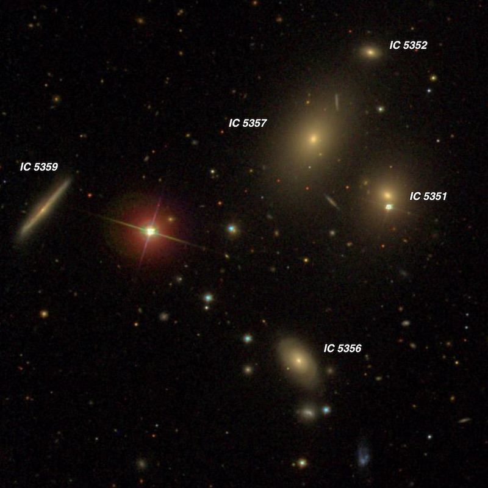
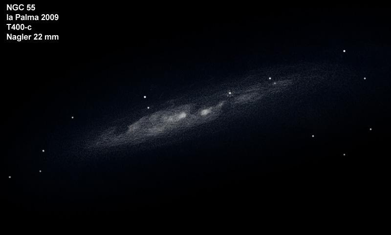
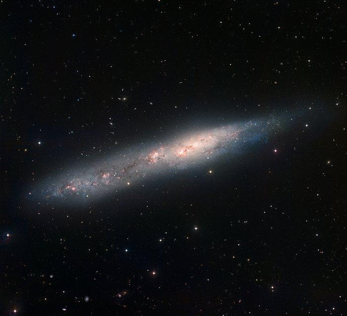
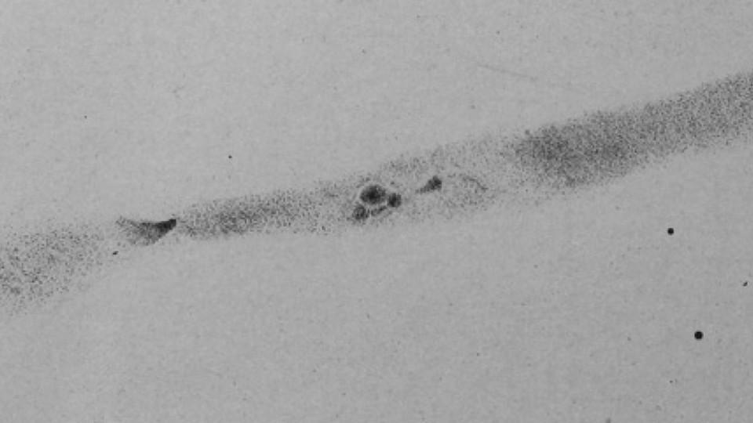

NGC 55
- Name: NGC 55 = IC 1537 = ESO 293-050 = MCG -07-01-013 = PGC 1014
- RA: 00h 15m 05.9
- Dec: -39° 13' 01"
- Type: SB(s)m edge-on
- Size: 32.4' x 5.6'
- P.A.: 108°
- Mag: V = 7.9, B = 8.4
This southern showpiece was discovered by James Dunlop on 7 July 1826 from Parramatta (near Sydney) using his 9-inch f/12 speculum reflector. He described it as "a beautiful long nebula, about 25' in length; position north-preceding and south-following, a little brighter towards the middle, but extremely faint and diluted to the extremities. I see several minute points or stars in it, as if they were through the nebula: the nebulous matter of the south extremity is extremely rare, and of a delicate bluish hue. This is a beautiful object."
John Herschel made his first observation on 3 May 1834 from the Cape of Good Hope, noting "bright; very large; very much elongated in a long irregular train, the preceding end being much the brightest. Whole length = 1.5 diam. of field, or 22' The nucleus is either a double star or a much more sharply terminated nebulous mass, elongated in a different position (146.5°) from that of the nebula (109.8°)." A second observation was made on 23 October 1835; "very bright; very large; very much elongated; at least 25' long and 3' broad. The following part is faint, the preceding and shorter tri-nuclear, the 2nd nucleus taken. A strange object." His final observation from 4 October 1836 reads, "very bright, very large; a very long irregular crooked ray with 3 nuclei, the second of which appears to consist of stars." His sketch of the galaxy clearly shows the convoluted form and three brighter sections of NGC 55.
This irregular galaxy resides at a distance of only ~6.2 million light years. So it's one of the closest galaxies to the Milky Way outside of the local group (possibly the closest). NGC 55 is viewed nearly edge-on and has a diameter of ~55,000 light years. A 2006 study ("Distance determination to NGC 55 from the planetary nebula luminosity function") by Steene et al yielded a distance of 7.5 million l.y. This is comparable to NGC 300 and it's very possible the two galaxies form a bound system. NGC 55 extends over 30' in length and the fainter southeast end of the galaxy (catalogued separately as IC 1537) crosses over the constellation border into Phoenix!
With a declination of -39°, northern observers don't see this galaxy at its finest. Still, even though it only rises 5 to 10° above the southern horizon I encourage you to go after NGC 55 as it holds a wealth of detail. Here's Ron Buta's eyepiece sketch using a 36-inch at McDonald Observatory (on a non-photometric night).

Serge Vieillard sketched it with a 16-inch from La Palma --

I had an amazing view through a 30-inch in 2010 at Coonabarabran in Australia --
NGC 55 nearly filled the 37' field of the 21mm Ethos at 264x, extending close to 30' in length WNW-ESE and roughly 4' in width. The structure was fascinating at 429x with a highly irregular surface brightness due to dusty patches and rifts along with bright clumps and knots. The "bright" central section, which is offset WNW of center, spans ~9' in length. At the west end of the central section, the surface brightness dims significantly and the galaxy tapers, extending several arc minutes further WNW. At the ESE side of the central portion is a bright, elongated, mottled core, roughly 1' in length and bulging slightly. Just ESE of the core are two noticeable knots; the first is small but elongated, the second knot is very bright and elongated. With careful viewing the second knot resolved into two individual pieces or clumps. Continuing further ESE, the surface brightness drops significantly very quickly and a large, elongated dark wedge appears to take a bite out of the galaxy. Just as the galaxy begins to brighten again towards the ESE end, there is another bright round knot and a second very small piece just detached to the ENE. At the ESE tip the galaxy brightens a bit more and has an irregular, patchy appearance with a couple of brighter stars superimposed.

This image was taken with the Wide Field Imager on the 2.2-metre MPG/ESO telescope at ESO La Silla Observatory.
GIVE IT A GO AND LET US KNOW!
Steve's follow-up — October 3rd, 2016, 03:58 PM
Here is a sketch published in 1885 based on observations made with the ill-fated Great Melbourne Telescope
